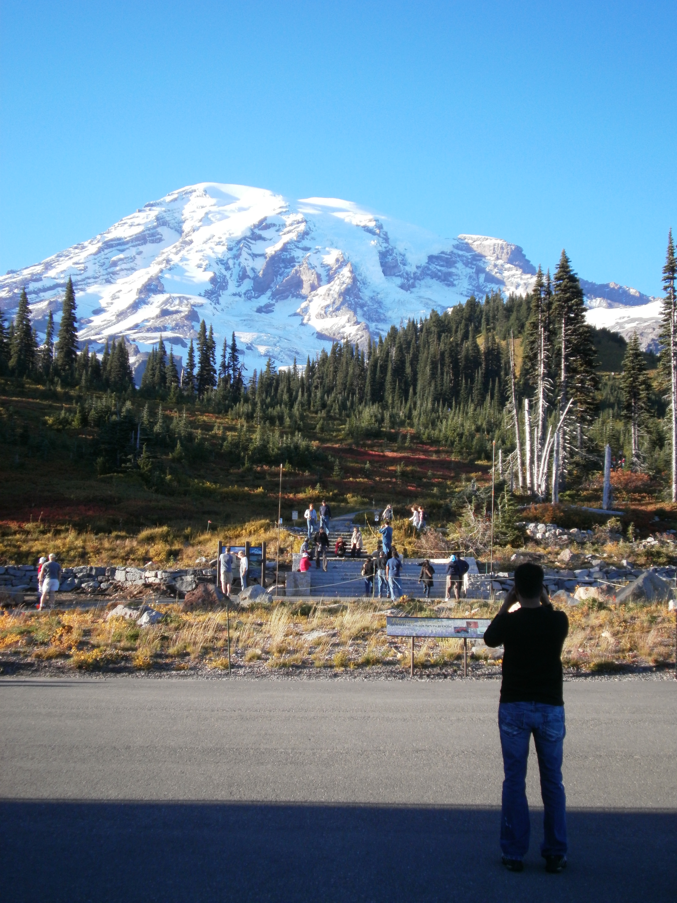

My name is Megan Hart and I have been a travel, nature, and animial photographer as long as I can remember. This website was originally created on 180306 (two digit year, two digit month, two digit day), my mother's 63rd birthday, for my LaunchCode class. However, watermarking and getting a storefront full of pictures from my life has been on my bucket list since 2003.
Since I do yet know how to mass watermark my images for sale, I will only post three, one from each category.
Additionally, I will include two that are from "My favorite moment." Each image was taken with moments of the other, facing 180 degrees opposite.
Travel:
This image was taken 100925 near Mt. Saint Helen.
Nature:

This image was taken 101005 near Tamolitch Falls.
Animal:
This image was taken 101006 somewhere not to far from Tamolitch Falls.